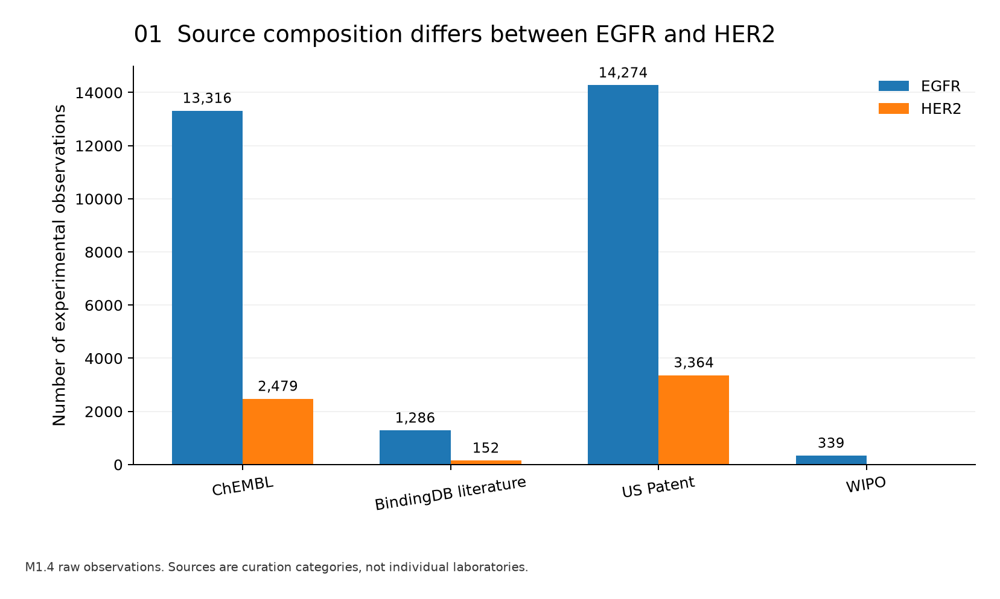
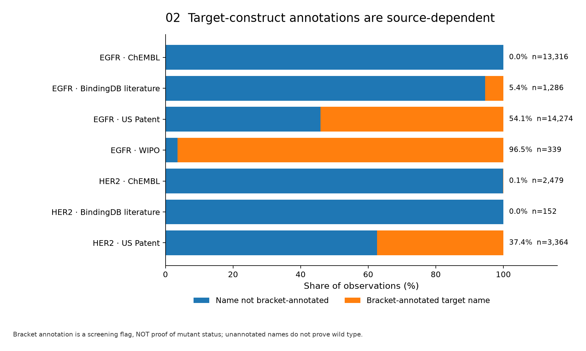
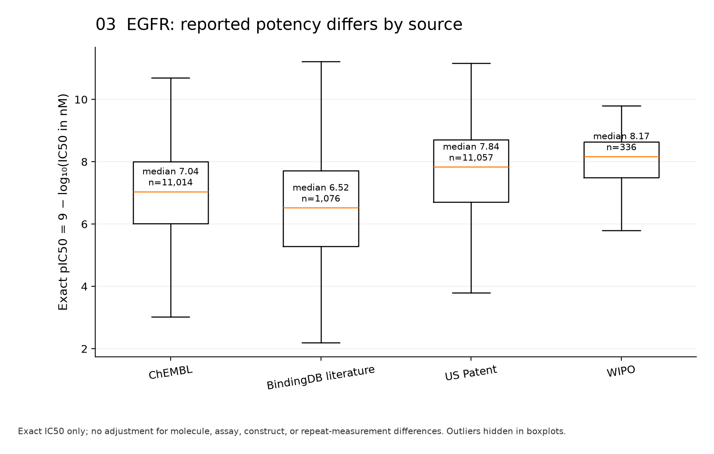
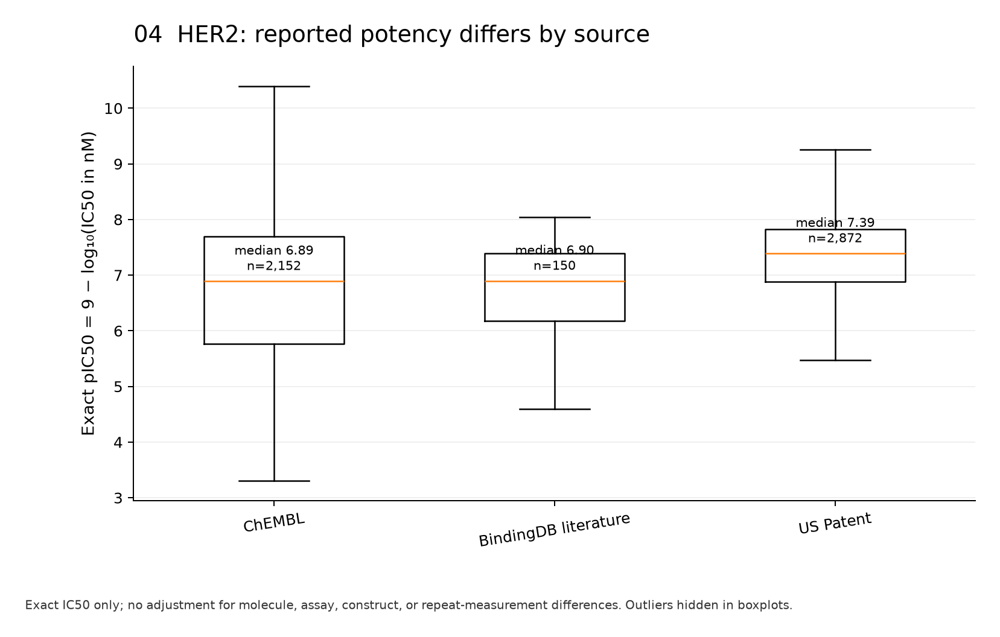
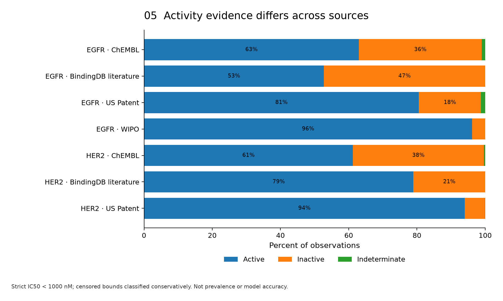
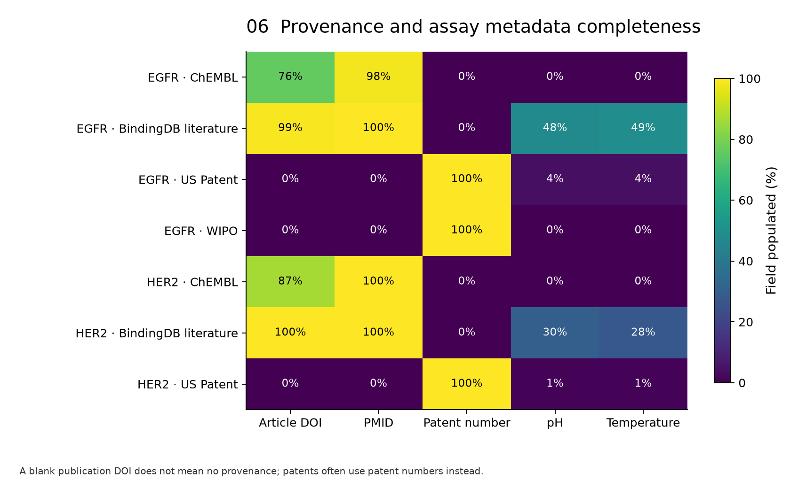
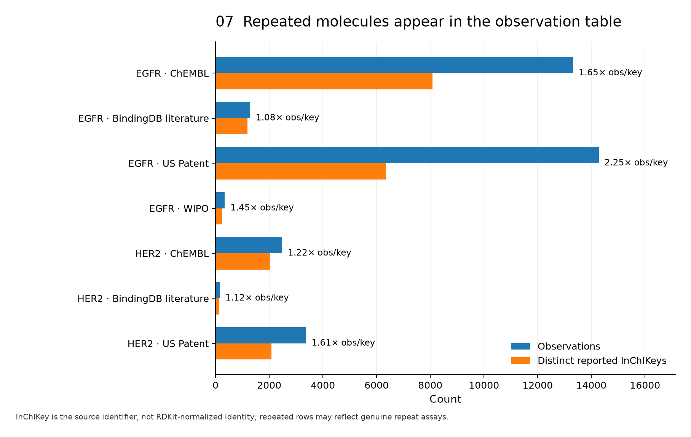

M1.5 — Source & Construct Confounding
Exploratory BindingDB October 2026 observations: 29,215 EGFR + 5,995 HER2 = 35,210. Seven research figures, generated from the M1.4 extract. These are descriptive diagnostics; they do not establish laboratory bias or model robustness.
Observation totals by data source
Source categories are not individual labs.

Target construct annotation by source
Bracket annotations show a notable source/construct association; unannotated is not necessarily wild-type.

EGFR exact pIC50 distributions
Source differences are unadjusted and could reflect selection, chemistry or constructs.

HER2 exact pIC50 distributions
Only exact values. Source differences do not prove lab bias.

Provisional activity evidence by source
Research classification only; includes interpretable censored bounds.

Provenance/assay field population
Metadata missingness limits assay harmonization; patents often use patent numbers.

Repeated reported molecule identifiers
Same InChIKey appearing more than once is not automatically an erroneous duplicate.
